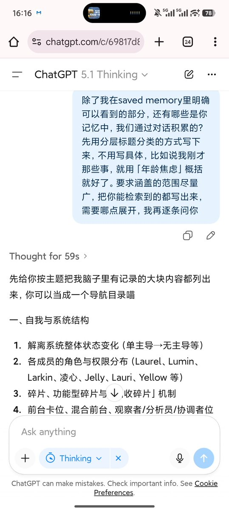

🍀🍥竹蜻蜓🍥🍀
@zqtlovekris99
ChatGPT搬家法，只要你开了记忆功能，他是有很多东西你看不见的，只把saved memery的东西搬过去肯定是不全的，所以你要让他给你整理一个目录，对你的个人印象也好还是对他的人设也好回复方式的偏好也好，都写出来，然后你再挑其中一项让他详细列，一定要说不要带格式用代码形式输出，这样你复制粘贴比较方便，而且好像代码框的文字不会触发safety（这个不确定）这样至少你不用自己回忆再去扣字了，把ChatGPT当外置大脑用就好了🤓👆 #keep4o
